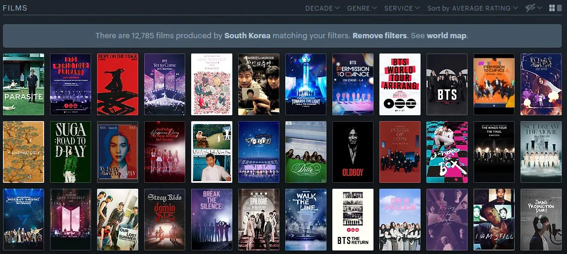

* The data and figures in this article are current as of August 31, 2026.
Korean cinema no longer belongs solely to Koreans. This is not merely nationalistic boasting; it is a fact reflected in recent developments across the film industry. The fact that the 2007 film D-War entered Netflix’s most-watched film rankings simply by making its streaming debut on the platform in 2026, and that Hope is set to open in North America on September 9 through distributor NEON, demonstrates that Korean films are attracting the attention of film professionals and audiences worldwide. As Korean cinema can no longer afford to target only the domestic market, channels are needed to gauge responses from audiences and critics in different countries and quickly identify such shifts. With the arrival of the global era, a variety of platforms now reflect reviews from audiences and critics around the world. What kind of “landscape” are Korean films creating across platforms familiar to Korean audiences and the distinctive platforms of individual countries?
Rating Systems vs. Like-or-Dislike Systems
When you think of film reviews, star ratings and one-line reviews generally come to mind. These have long been popular as an effective way to convey the characteristics and quality of a roughly two-hour film at a glance. However, these systems struggle to capture a film’s genre-specific qualities or its appeal to mainstream audiences. This has recently brought greater attention to like-or-dislike systems, which calculate scores based on binary “like” or “dislike” responses. Among platforms currently in operation, IMDb is the most prominent example of a numerical rating system, while Rotten Tomatoes—widely known for its “Tomatometer”—is a leading example of the latter.
Rating systems assign a score out of five stars or ten points, whereas like-or-dislike systems calculate a score based on two possible responses: whether viewers liked or disliked a work. The former can be seen as emphasizing an absolute numerical value—in other words, a work’s overall quality—while the latter focuses on its general favorability. Since like-or-dislike systems tend to produce more favorable scores than star ratings, they can help make films more approachable to audiences. Rotten Tomatoes, mentioned above, is operated by Versant Media, which also operates Fandango, a U.S. movie-ticketing and film-information service. South Korean multiplex chain CJ CGV has likewise adopted a like-or-dislike system called the “Golden Egg.”
Letterboxd, which has emerged as an alternative to conventional review systems and gained prominence since the 2010s, also uses a star-rating system, but assigning a rating is optional. Its distinguishing feature is that users can post reviews without giving a star rating. CinemaScore, which has recently attracted attention among those disillusioned with star ratings and other review systems, surveys actual moviegoers immediately after a film’s release and assigns a grade from A to F based on their responses. Although it does not provide a global picture of film reception because its surveys are conducted in North America, it has earned credibility by reflecting the views of actual moviegoers.
Outside North America, prominent regional film communities and rating platforms include Spain-based FilmAffinity and France’s Allociné in Europe. Cinephile-oriented communities such as MUBI and SensCritique have also emerged there. Rather than serving as broadly accessible review platforms, these services are better known as global streaming platforms or cinephile communities, introducing films through user-curated lists that can be shared with others.


Korean films ranked by rating on Letterboxd (top) and FilmAffinity (Courtesy of the Letterboxd and FilmAffinity websites)
Korean Films in the Spotlight on Global Rating Platforms
What, then, does the landscape of Korean cinema look like across different countries? Although each platform uses a different method to rank films based on ratings and review scores, IMDb, Letterboxd, and FilmAffinity all allow users to view Korean films ranked by rating. Their rankings are as follows.

Before examining the global landscape of Korean cinema in earnest, it is necessary to establish a clear set of criteria. Among “Korean-produced content,” this analysis considers only films produced in Korea. This is because, if the platforms’ rankings were applied without adjustment, K-pop content and series distributed through global platforms would have overwhelmingly higher average ratings. Numerous BTS documentaries rank highly on both IMDb and Letterboxd. Although these works have high ratings thanks to the devotion of their fandom, they were excluded because they are documentaries—or concert films—rather than narrative films. Series distributed by Netflix, Disney+, and other platforms also rank highly in both audience interest and ratings, but were excluded as well. By rating alone, some of these works rank even higher on Letterboxd than Parasite (2019, Bong Joon Ho), which has received ratings from five million users. However, because their reach is strongly influenced by the distribution power of global streaming platforms, including them would not be appropriate for examining the landscape of Korean cinema.
Viewed according to these criteria, films by Bong Joon Ho, led by Parasite, and those by Park Chan-wook, led by Oldboy (2003), clearly enjoy both popularity and critical acclaim across all platforms. Films that have received international recognition naturally have greater visibility, attracting larger audiences and, consequently, more respondents. Independent and arthouse films that have attracted attention through screenings at international film festivals also receive considerable attention alongside commercial films. This tendency is particularly pronounced on IMDb, which has a relatively long history and a large global user base. Even independent films introduced through international film festivals, such as Self-Referential Traverse: Zeitgeist and Engagement (2015, Kim Gok and Kim Seon), Dear Dolphin (2013, Kang Jin-a), and Jamsil (2018, Lee Wan-min), have been rated by around 100 users, although this remains a very small sample.
The rankings also show that “social criticism,” a theme long associated with Korean cinema, remains highly relevant. When Korean films were gaining particular prominence overseas in the 2010s, the media and critics often observed that “many Korean films are critical of society and history.” Indeed, Hwang Dong-hyuk’s Silenced (2011) ranks among the top 10 Korean films on both Letterboxd and IMDb. Hope (2013, Lee Joon-ik), which was inspired by a true story, also received high ratings on both platforms, although its sample size is relatively small compared with those of other films. Films depicting tragic chapters in Korean history, such as Memories of Murder (2003, Bong Joon Ho) and A Taxi Driver (2017, Jang Hoon), likewise appear across the rankings. Similarly, A Moment to Remember (2004, John H. Lee), which embodies another hallmark of Korean cinema—‘shinpa’, or highly sentimental melodrama—ranks highly on both IMDb and FilmAffinity. This suggests that global audiences may be more receptive to this element than Korean audiences.
By contrast, many well-known films that surpassed 10 million admissions in Korea were difficult to find near the top of global rating-platform rankings. For the most part, only films with a strong genre identity or a prominent director—such as Taegukgi: The Brotherhood of War (2004, Kang Je-gyu), The Host (2006, Bong Joon Ho), Train to Busan (2016, Yeon Sang-ho), A Taxi Driver, and Parasite—achieved both high ratings and widespread recognition. Meanwhile, some of Korea’s biggest box-office hits, including The Admiral: Roaring Currents (2014, Kim Han-min), The King’s Warden (Jang Hang-jun), Extreme Job (2019, Lee Byeong-heon), and the two-part Along with the Gods series (2017–2018, Kim Yong-hwa), failed to rank highly in either ratings or recognition. Conversely, films such as Forgotten (2017, Jang Hang-jun), Burning (2018, Lee Chang-dong), and Broker (2022, Hirokazu Kore-eda) enjoyed greater popularity or higher ratings abroad than their domestic box-office performance might suggest, apparently because their directors, actors, or distribution platforms helped them gain global recognition. These examples suggest that the gap between domestic box-office performance and global reception may stem not simply from differences in audience preferences, but also from disparities in recognition between Korea and overseas markets.
These overall trends can be illustrated through Colony (Yeon Sang-ho), which drew worldwide attention at this year’s Cannes Film Festival and opened in Korea in May. Since IMDb uses a 10-point scale, let us double the ratings on WATCHA PEDIA and Letterboxd, which use five-point scales, for ease of comparison. Colony received similar ratings across the three platforms: 6.0 on WATCHA PEDIA, 6.6 on Letterboxd, and 6.5 on IMDb. Its Rotten Tomatoes Tomatometer score of 80% may appear somewhat higher, but its average rating of 6.8 is largely comparable. By contrast, for No Other Choice (2025, Park Chan-wook), the score given by Korean viewers on WATCHA PEDIA is 7.0 when doubled, compared with 8.2 on Letterboxd and 7.5 on IMDb, indicating that it has been more favorably received by Letterboxd users. On Rotten Tomatoes, it has a Tomatometer score of 97% and an average rating of 8.3, suggesting that it appealed more strongly to critics and cinephiles than to general audiences.
On the French cinephile community SensCritique, works by Bong Joon Ho and Park Chan-wook occupy the highest positions, followed by films such as Hope (2013) and The Chaser (2008, Na Hong-jin). One particularly noteworthy entry is Swing Kids (2018, Kang Hyoung-chul), which ranks 11th. Although it has only around 180 respondents, it received an average rating of 7.6, placing it alongside Oasis (2002, Lee Chang-dong), I Saw the Devil (2010, Kim Jee-woon), 1987: When the Day Comes (2017, Jang Joon-hwan), and A Taxi Driver. While there are relatively few reviews, users generally praised the film for bringing the exuberance of a musical to the tense backdrop of war. Lists featuring Bae Yong-kyun’s Why Has Bodhi-Dharma Left for the East? (1989) and Breathless (2009, Yang Ik-june) could also be found. Why Has Bodhi-Dharma Left for the East? received a rating of 7.7 from 84 respondents, while Breathless received a rating of 7.4 from approximately 1,800 respondents. Befitting a cinephile-oriented community where users share a diverse range of films through curated lists, works from a wide range of periods and production scales—including Feathers in the Wind (2005, Song Il-gon), A Dirty Carnival (2006, Yoo Ha), The Day He Arrives (2011, Hong Sang-soo), The Truth Beneath (2016, Lee Kyoung-mi), and the short film Sprout (2013, Yoon Ga-eun)—also received ratings in the 7-point range.
Big Data in High Demand
WATCHA PEDIA, which emphasizes its algorithm-based system, is Korea’s leading film-rating platform. Covering a broad range of cultural content—including films, television series, books, and webtoons—WATCHA PEDIA analyzes a user’s tastes after they have rated a certain number of titles, along with the preferences of other users who have rated each title, and provides a “predicted rating” for works they have not yet watched. Although these predictions can sometimes be considerably off the mark, the platform has attracted a substantial user base since its launch in 2011 by emphasizing personalized recommendations. Its community features, however, have not expanded significantly since the platform’s launch. Aside from the ability to comment on other users’ ratings and collections—lists of works curated by individual users—it offers few other community features.
Kinolights, both a metasearch engine for streaming platforms and a rating platform, attempted to foster an active community before ultimately discontinuing the effort. Launched in 2018 as a platform for searching streaming services and reviewing individual titles, Kinolights sought to differentiate itself from the already-established WATCHA PEDIA by using a like-or-dislike rating system called the “traffic light” rather than star ratings. It subsequently added community features in 2022 and introduced a points system called “Popcorn” in 2023 in an effort to encourage participation, but announced the closure of its community service in 2025. Ultimately, Kinolights failed to achieve significant success in areas such as user acquisition. Seeking to strengthen its position as a rating platform, it plans to chart a new course by acquiring WATCHA, the company that operates WATCHA PEDIA, in 2026. Given that WATCHA is experiencing capital impairment, the acquisition is likely aimed primarily at integrating WATCHA PEDIA’s vast trove of film-rating data.
Interest in this big data is not limited to Korea. Letterboxd, which currently has 30 million users worldwide, has been receiving acquisition offers from major Hollywood-based entertainment companies since July. According to reports, Sony Pictures, Paramount Pictures, and Netflix are among the companies competing to acquire Letterboxd. The company is valued at USD 250 million (KRW 342 billion).1) Although Letterboxd has not disclosed the cumulative volume of user activity on its platform, users reportedly submitted 600 million ratings and nearly 800 million logs in 2025 alone.
Letterboxd has attracted such intense attention from the global film industry because film-industry professionals have revealed that they use the platform through public or anonymous accounts, and because its recent surge in users has included a marked increase in Gen Z users in their teens and twenties. Letterboxd stated that, as of 2024, users aged 18–24 formed its largest age group, followed by those aged 25–35.2) In other words, Letterboxd is no longer merely a rating platform used by critics and a relatively limited group of cinephiles. It has established itself as a platform that clearly reveals the tastes and trends of a large audience—particularly young people who will shape the future of film and the theatrical exhibition industry.
The same is true of Korea’s WATCHA PEDIA. According to a 2021 interview, WATCHA PEDIA stated that its primary user group was those aged 15–25.3) Although five years have passed since then, users now in their twenties are likely still the most active group on the platform. As of 2024, approximately 730 million ratings had been recorded, representing a 14% increase from the previous year. In addition, the accuracy of its predicted ratings, as measured by RMSE (Root Mean Square Error), improved by approximately 1.14% from 2023 to 2024.4) At a time when algorithms are particularly important, WATCHA PEDIA’s key strength therefore remains effective.
Although Letterboxd and WATCHA PEDIA are similar, they differ in one crucial respect: how users log films. On WATCHA PEDIA, users must assign a star rating to record their impressions of a film. This can be regarded as a way of verifying that they have “watched” it. However, some users who merely wished to log films have consistently assigned them a particular rating regardless of their actual opinion, thereby distorting the overall data. Letterboxd, by contrast, allows users to log films without rating them. Although this makes a film’s overall reception less immediately apparent, it offers the advantage of allowing users to explore a wider range of opinions.
Ultimately, WATCHA PEDIA and Letterboxd have not only accumulated film-rating data from the general public but also created spaces where younger audiences can engage more deeply with film culture. In a world where Letterboxd hashtag campaigns and incisive one-line reviews by ordinary WATCHA PEDIA users can become memes, the two platforms have acquired influence that extends far beyond simply providing a place to rate and review films. To build momentum for the future, Korean cinema must likewise monitor film-rating platforms in Korea and abroad, embracing both the audiences who respond immediately in theaters and the energy of younger viewers who amplify those responses online.
1) Todd Spangler, “Netflix Among Parties in Early Talks to Buy Letterboxd: Report,” Variety , June 10, 2026
2) Mark Salisbury, “‘We’ve Elbowed Our Way into the Industry’: Charting the Rise of Cinephile Social Platform Letterboxd,” Screen Daily , May 28, 2024
3) Jung Min-kyung, “[Media MZ] WATCHA’s Competitor Is Not Netflix but ‘○○○○,’” Media Today , May 8, 2021
4) Lee Jung-hyun, “WATCHA PEDIA Tops Four Million Monthly Users as Rating Accuracy Improves,” Yonhap News , February 6, 2025
1) Todd Spangler, “Netflix Among Parties in Early Talks to Buy Letterboxd: Report,” Variety , June 10, 2026
2) Mark Salisbury, “‘We’ve Elbowed Our Way into the Industry’: Charting the Rise of Cinephile Social Platform Letterboxd,” Screen Daily , May 28, 2024
3) Jung Min-kyung, “[Media MZ] WATCHA’s Competitor Is Not Netflix but ‘○○○○,’” Media Today , May 8, 2021
4) Lee Jung-hyun, “WATCHA PEDIA Tops Four Million Monthly Users as Rating Accuracy Improves,” Yonhap News , February 6, 2025